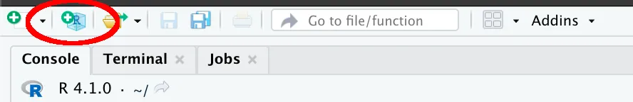
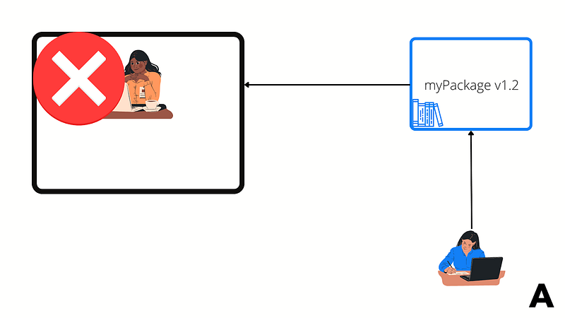
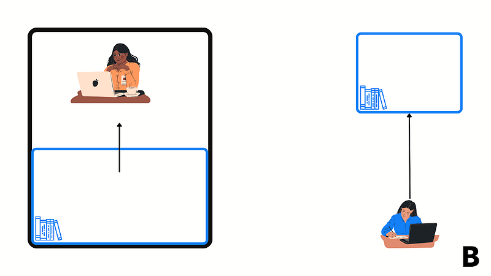

There are a lot of great R software developers out there. People that can set up a professionally looking and highly polished R project that has easy to read and maintain code, well defined dependencies, tests, etc.
This article is not for them. This article is for the R user that has no or little experience in software engineering, but that recognises that the code they produce could be of better quality.
We will look at a set of one-off pre-development checks to get started on the right foot, and then we will see how we can drastically improve the quality of a project set up by implementing six simple steps.
Phase 1: One-off pre-development checklist
Coding convention
An often overlooked indicator of good code is its consistency. Do you always use the same convention to name your variables or functions? Do you structure your files in a similar way? Consistent code is predictable: it becomes easier to manipulate because we know what and how things should be called, and where they should go. Ever find a code where there is a function called getData(), then one called getdata(), and then another one called get_data()? Following the correct call stack can become a very hard task in such a code base.
But let’s take a step back. Being consistent with yourself is important, but even more important is to be consistent with your team and your organisation. Your team should have a defined set of coding conventions. If it does not, talk with your team lead and try to get one agreed upon. A great place to start is the Google (Google’s R Style Guide | styleguide) and the Tidyverse (Welcome | The tidyverse style guide) guidelines.
Choose an integrated development environment (IDE)
For R development, this is a very simple choice. Just use RStudio. While I know many programmers coming from other languages might want to try to stick to IDE like Visual Studio Code, if you work in R you should be using RStudio. RStudio is specifically designed to support R development. And yes, if you never used it before it will take some time to learn it, as it is for every new tool. But trust me, it will be worth it.
A more involved decision that needs to be made is about which version of RStudio, specifically, should you develop in RStudio desktop, or in RStudio Server? All the organisations I have worked with offer the option to use both. Using RStudio Server has cost implications as it needs to be licensed: the more users, the higher the cost for your organisation, and the cost is normally passed down to your department. However, I would strongly recommend developing on RStudio Server, rather than RStudio desktop. The reason is that RStudio Server will be set up to resemble the test and production environment more closely than your local machine does. For example, your machine is likely running Windows, while RStudio Server will be running on some flavour of Linux. If you use things like parallel computing, this can be a major challenge. Furthermore, you will normally find it a lot easier to connect to external services like a database from the server than from your machine. Finally, the server is almost certainly more powerful than your machine, so it can run your code faster if set up properly.
Decide where to store your code
I cannot tell you how many times I have seen teams storing code in either local folders or cloud services like Dropbox. Don’t do that. Use a version control system like Git or SVN. That is by far the simplest way to keep track of any change anyone makes to your code, to share the code with other people, and to collaborate with other developers. There is no reason why you should not be using a version control system. I have wasted countless hours trying to get access to people’s code base stored on their local machine. Don’t do that to your colleagues and use a version control system instead.
Phase 2: The 6 steps set-up
Now that you have completed some preparatory set-up, let’s take a look at six steps you should follow every time you start an R project.
Step 1: Create an R project

Think about when you start any project, not only a coding project. The first thing you want to do is to prepare your working area. If you start to work on a puzzle, you want to clean up your table and lay out what you need around you. If you want to build a cabinet, again you want to tidy up your work area and then prepare all your materials and tools. You should do the same thing when you start an R project: don’t just dump all your files to the desktop.
You could simply create an empty folder and start to work in there, but there is a better way. Create an R project. In this way you are setting up RStudio to fully serve your project with all the tools you need. Since you already created a repository in the previous step, you can easily create a version control project that will automatically give you UI elements used to commit, pull, and push your code.
R projects will allow you to isolate your work from other projects. Not only can you have project specific files and libraries, but also project specific settings.
Step 2: Create a virtual environment
A virtual environment is your project’s private library. Having a virtual environment is vital to the health of your project for at least two reasons.
Protect yourself against upgrades that will break your code. Suppose you are using a library you load from the main, shared repository in your local machine or your company’s server. If the owner of that library releases a new update that is incompatible with your project, your code will simply stop working. You want to make sure that you have a stable library. Any upgrade should be controlled only by you. If you share your code with somebody else, you want to make sure they run your exact configuration: the same version of R, the same version of each dependency. If you share the file used to create your virtual environment, you can achieve this. To create a virtual environment in R, simply install the renv library, then run the command renv::activate(). You are done.


Step 3: Organise your project
Coming up next, organise your code. Once again, consistency is key. Find a structure that works for your team and stick to it as much as possible regardless of the kind of project you are trying to set up: purely exploratory, Shiny dashboard, plumber API, or an R package.
Personally, I recommend following the R Packages structure. A simple set up is illustrated below.
Automatically created if you followed step 1 and 2:
renv.lockfile,renvfolder and.Rprofilefile. This is your virtual environment set up. They will be automatically created by renv when you activate it..Rprojfile. This is an RStudio file containing your project specific settings. Created automatically when you create an R project.
Mandatory:
README.mdfile. This is probably the most important file you’ll make. Here you want to describe the goal of the code, any set-up and running instructions, and, if there is no other document as an architecture diagram or a system maintenance guide, some details about how the code is organised and how it works. Note that this is high-level documentation, there is no need to go into the details of functions. Also, note that this is a live document. As you change things in your code base, make sure you update the documentation as well. Don’t leave the documentation until the end of the project. By then you’ll be fighting deadlines and you will be ready to move on to your next project. Start with your documentation now.Rfolder. This folder contains your code, in the form of .R files.testsfolder. Code tests should go in here..gitignore. In this file, you add everything you do not want ending up in your remote repository, for example, (large) datasets.
Optional, depending on your project specific needs:
wwwfolder. This folder contains images and other resources that you might want to include in your documentation, in reports, or somewhere in your tool.datafolder. This folder contains data. Note that I recommend to keep your data at minimum here, just the minimum you need to run your code. You do not want to overload your repository. Large amounts of data should be stored somewhere else and referenced appropriately (link to file, queries to databases, etc.). Also avoid storing data in binary form (.rda, .xlsx, etc.). Use non-binary sources as .csv, .json, .txt instead.instfolder. This folder is for more advanced users, but in general you want to store files that are used to generate extra material your tool might need. For instance, if you generate data programmatically, the code to generate such data should go here..Renvironfile. This file is used to set up global variables. It can be used to store secrets such as passwords or tokens that you do not want to commit to the repo.config.ymlfile. This file contains constants that your code uses. If you put all of your constants here it will be much easier to keep track of them and to modify them than if they were buried inside the code base. I recommend using the config.yml version, compatible with the config library, but at minimum you can create a config.R that you can source in your code.
Below is an example of how an R project properly set up would look like.
.
├── .Renviron
├── .Rprofile
├── .gitignore
├── R
│ └── dataExtraction.R
├── README.md
├── config.yml
├── data
│ └── testData.csv
├── inst
│ └── makeData.R
├── renv
│ ├── .gitignore
│ ├── activate.R
│ ├── library
│ ├── local
│ └── settings.dcf
├── renv.lock
├── thisArticleProject.Rproj
├── tests
│ └── testthat
├── vignettes
| └── vignette.rmd
└── www
└── diagram.pngStep 4: Organise your code
Now you are ready to start coding. When you put our code in R files, we should be mindful of the file names. I would suggest you create dedicated files where you group logically your functions, for instance all the functions dealing with a database connection should go in a database.R file, all the functions to make plots in a file called plots.R, etc. Just be organised so that you can easily find where your code is in the future.
One natural consequence of this approach is that it will force you to write smaller files, and ideally to create even smaller functions. What we are trying to avoid here is to have a code dump of thousands of lines of code into a single file. We also want to avoid having the code to be a single wall of text. Break it down into smaller, manageable chunks of related logic. When you do a puzzle, you don’t toss all the pieces in the air and hope that they land in the right spot. You break it down in small, manageable blocks: all the edges, all the red parts, all the green parts, etc. Do the same with your code.
Step 5: Comments and documentation
We already talked about the README file. But what about more low-level documentation? Well, this should be pretty straightforward: just use the roxygen standard. Roxygen is particularly useful when you work with packages, but it can be used in any R context, and it will help you reach that consistency target we already established being so important.
As for comments, books and books have been written on this subject. The most important thing is to make comments meaningful. I know, easier said than done, but remember: there is no need to comment every line. Just comment lines where something odd happens, for instance when you were forced to use a solution rather than a potentially simpler one because of some technical constraint. If your code is clean, you should not need too many comments.
Step 6: Testing
Finally, a small note on tests. Tests are often seen as a software developer task. If you consider yourself a modeller you might not think about testing very much, or at all. Furthermore, you might think that tests are slowing you down because you need to write tests rather than developing your tool further.
In reality, testing is an excellent way of doing documentation. By looking at tests, we can undoubtedly find out what the arguments of a function should be and what the return should be. Furthermore, it will give you the peace of mind that your code is actually working the way you think it is working. Remember: code that has not been tested is code that does not work.
Personally, I recommend you follow the testthat framework and store all your unit tests in a folder called tests/testthat, and prefix every test file name with “test-”.
Conclusions
As we saw, setting up a clean R project can be quick and easy. Yes, you might need to make some initial investment to learn new tools and libraries, but trust me, it is an investment with an extremely high return, not only in terms of the amount of work efficiency, but you will also be a lot more desirable in the job market: R users that are good developers as well as good statisticians are rarer than you might think, and highly desirable.